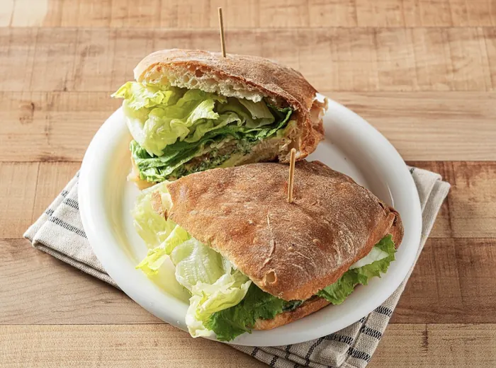
페스토 치킨
숙성 염지 닭가슴살, 홈메이드 페스토, 홈메이드 치킨시저 소스, 토마토, 양파, 로메인
겉은 바삭, 속은 쫄깃한 치아바타에 홈메이드 소스를 더했습니다.

숙성 염지 닭가슴살, 홈메이드 페스토, 홈메이드 치킨시저 소스, 토마토, 양파, 로메인
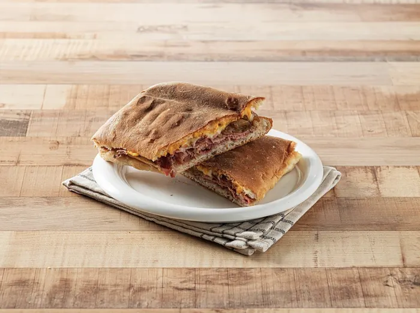
4일 숙성 후 2시간 구운 파스트라미, 양파·피망·버섯 볶음, 홈메이드 스테이크 소스, 마요네즈, 모짜렐라
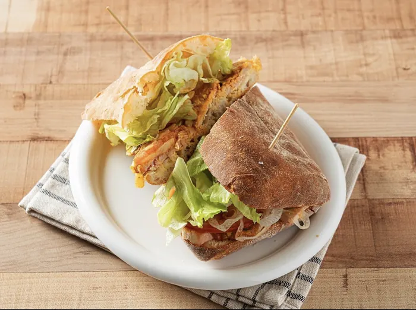
홈메이드 리코타 치즈, 숙성 염지 닭가슴살, 홈메이드 커리 소스, 토마토, 양파, 로메인, 마요네즈
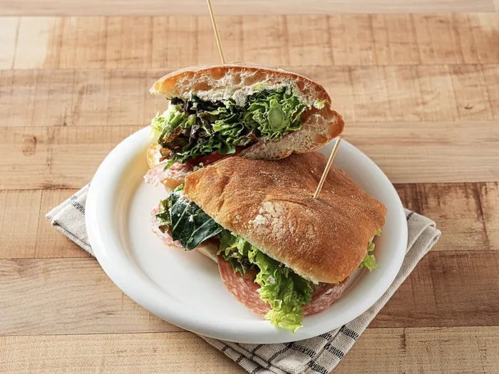
홈메이드 리코타 치즈, 살라미, 토마토, 양파, 샐러드 채소
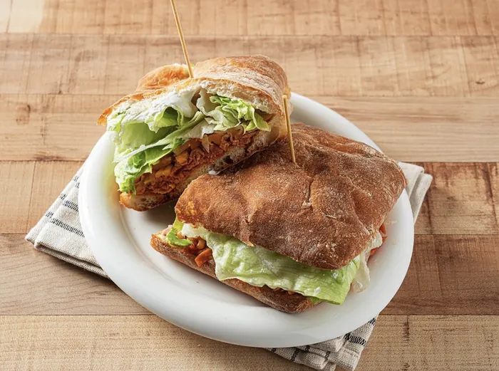
홈메이드 타코 시즈닝 고기, 체다 치즈, 토마토, 양파, 로메인, 사워크림
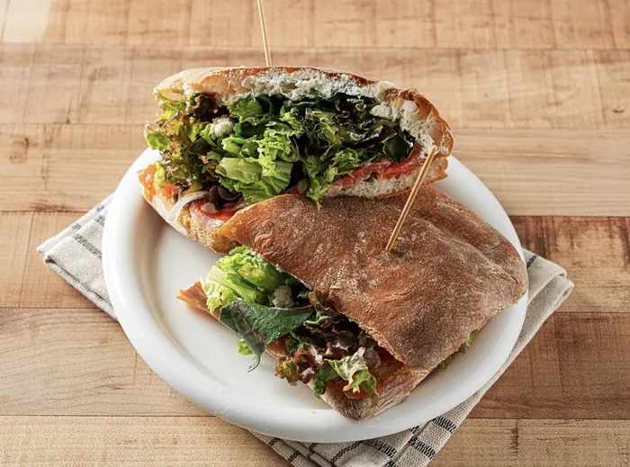
훈제 연어, 홈메이드 와사비 소스, 케이퍼, 레몬, 홈메이드 리코타 치즈, 토마토, 양파, 샐러드 채소
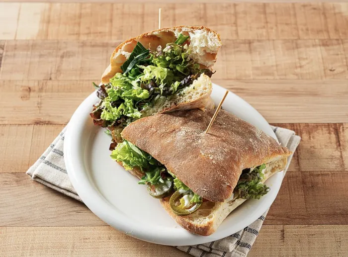
모짜렐라, 홈메이드 페스토, 토마토, 양파, 샐러드 채소
그릴에 눌러 구워 치즈가 녹아드는 따뜻한 파니니. 일부 메뉴는 모짜렐라 또는 리코타를 고를 수 있습니다.
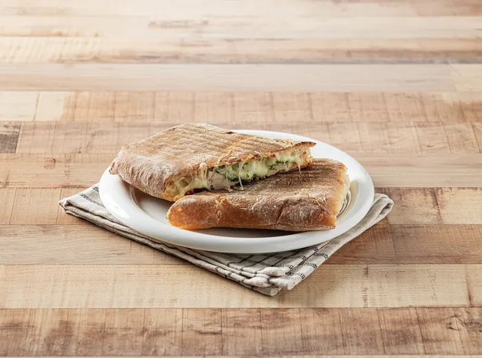
숙성 염지 닭가슴살, 홈메이드 페스토, 토마토, 양파, 모짜렐라
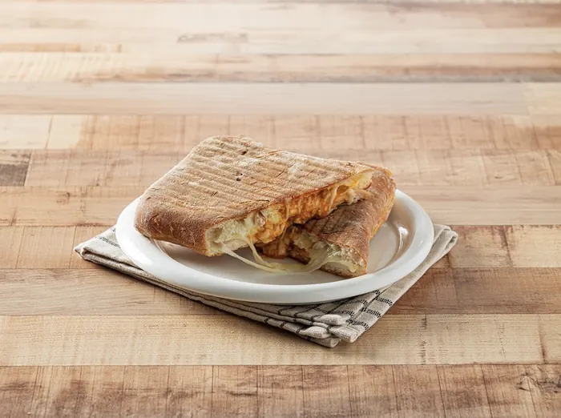
숙성 염지 닭가슴살, 홈메이드 커리 소스, 토마토, 양파, 모짜렐라
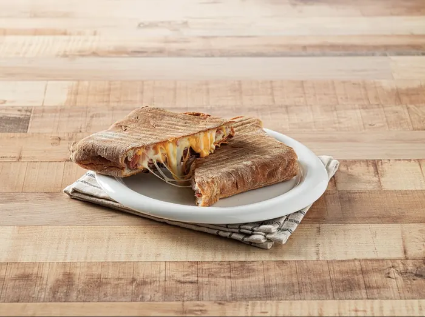
숙성 파스트라미, 양파·피망·버섯 볶음, 홈메이드 스테이크 소스, 마요네즈, 모짜렐라
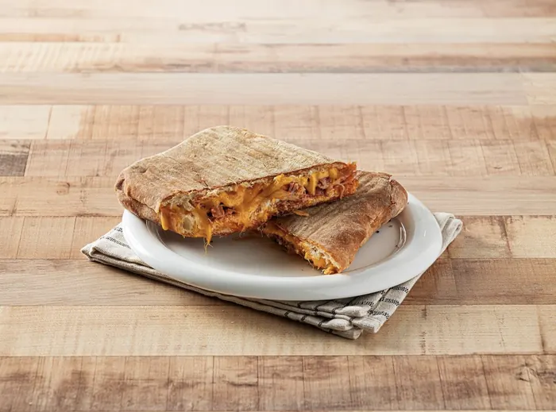
홈메이드 타코 시즈닝 고기, 사워크림, 토마토, 양파, 체다 치즈
직접 만든 리코타와 홈메이드 드레싱으로 든든하게.
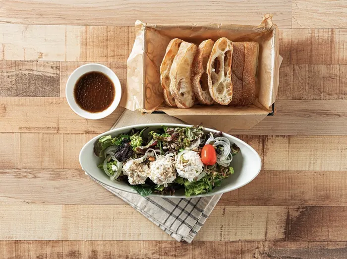
샐러드 채소, 홈메이드 리코타 치즈, 발사믹 소스, 견과류 믹스, 방울토마토, 건자두, 치아바타
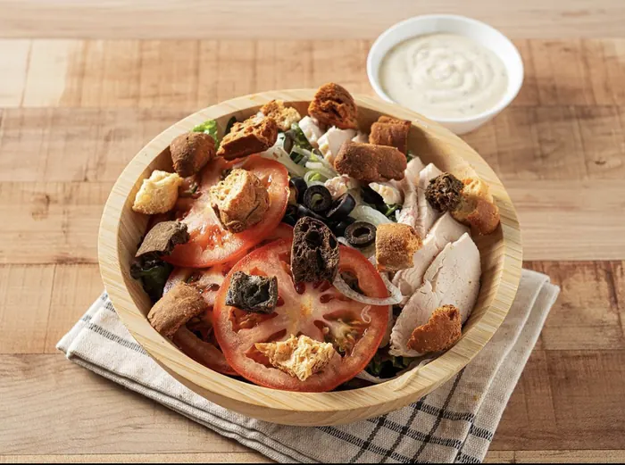
샐러드 채소, 숙성 염지 닭가슴살, 홈메이드 치킨시저 소스, 토마토, 양파, 올리브, 크루통
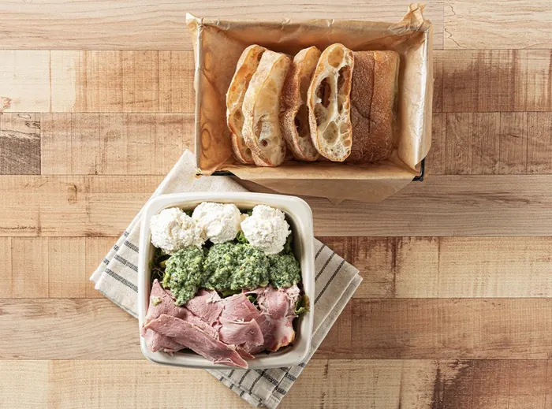
샐러드 채소, 홈메이드 리코타 치즈, 홈메이드 페스토, 치아바타
매장에서 직접 끓이는 크림 수프.
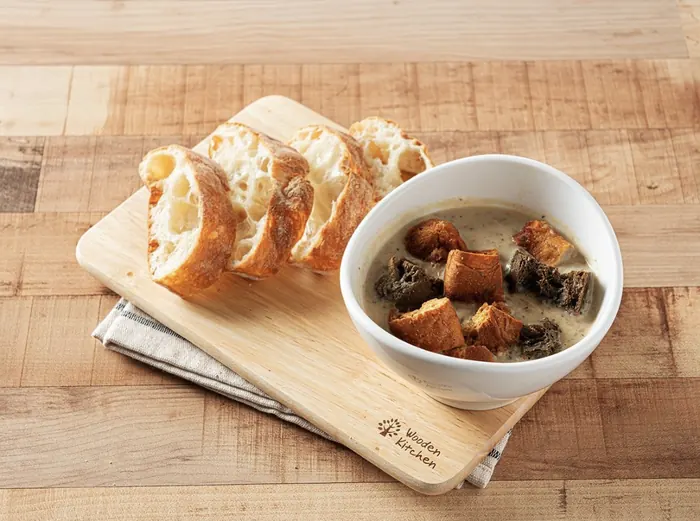
양송이와 새송이 버섯으로 끓인 크림 수프
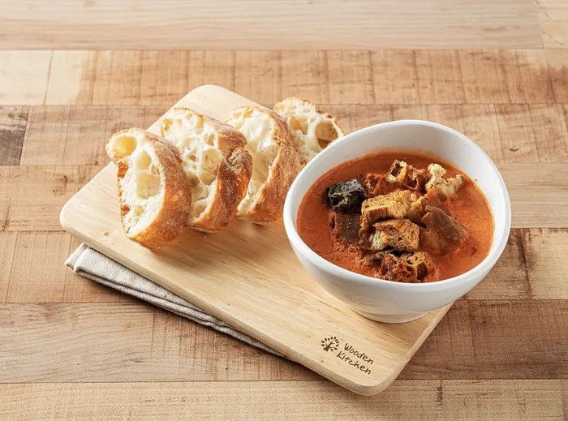
토마토로 끓인 크림 수프
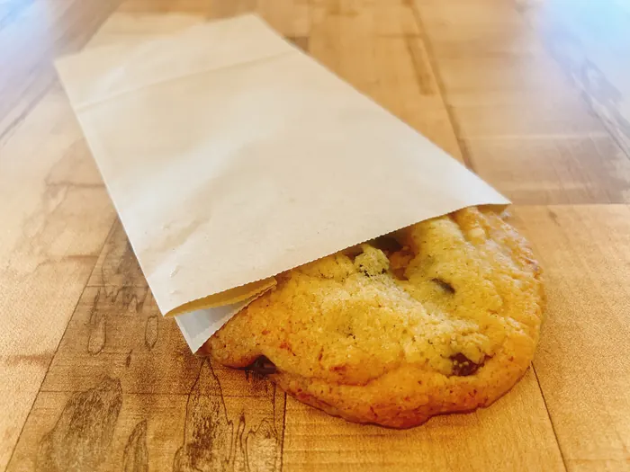
매일 매장에서 직접 굽는 쿠키
메뉴 구성은 매장 사정에 따라 달라질 수 있습니다. 가격과 판매 메뉴는 각 매장의 네이버 플레이스에서 확인해 주세요.